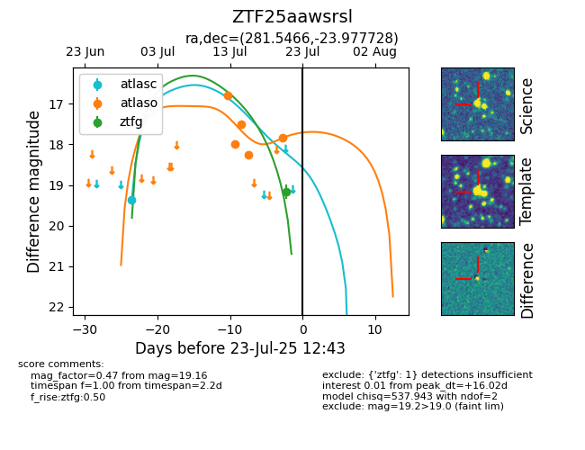

Target ZTF25aawsrsl at 2025-07-23 11:52, see:
FINK: fink-portal.org/ZTF25aawsrsl
Lasair: lasair-ztf.lsst.ac.uk/objects/ZTF25aawsrsl
ALeRCE: alerce.online/object/ZTF25aawsrsl
alt names
ZTF25aawsrsl (ztf,fink)
coordinates:
equatorial (ra, dec) = (281.5466,-23.97773)
galactic (l, b) = (10.8157,-9.59438)
photometry
last atlaso=17.83, ztfg=19.16
3 atlaso, 1 ztfg detections
